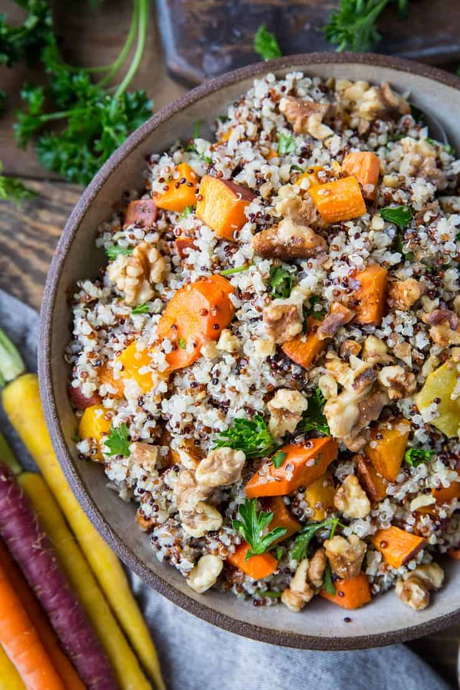

Quinoa salad with roasted winter vegetables

Description
This Quinoa Salad with Roasted Winter Vegetables is a super easy recipe to add to your lunchbox! Served with a flavorful tahini-harissa dressing. You can replace the cauliflower and butternut squash with your favorite vegetables or the butter beans with chickpeas, lentils, etc. for endless variations. If you have herbs that need to be used up, chop them roughly and mix them into the salad for an extra kick of freshness - coriander, parsley and mint taste particularly good here.
Especially valuable for athletes looking for healthy and fast made dish.
Ingredients
- 1 small head Cauliflower, cut into florets
- 1 butternut suqash, peeled, seeded, cut into pieces
- etc.
Steps
- Preheat the oven to 180°C.
- Toss the pumpkin and cauliflower with the melted coconut oil on a baking sheet with a pinch of salt. Roast for 30-40 minutes, turning halfway, until golden brown and soft.
- Scatter the pine nuts over the vegetables on the tray and return them to the oven for 1-3 minutes, until the pine nuts turn golden (they burn easily, so watch them closely!).
- etc.